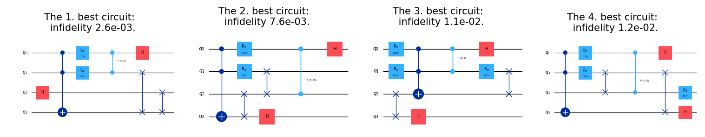
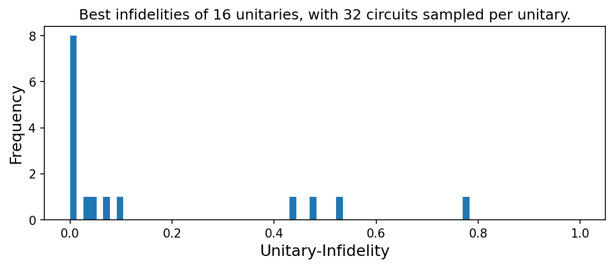

from genQC.imports import *
import genQC.utils.misc_utils as util
from genQC.dataset.config_dataset import ConfigDataset
from genQC.pipeline.multimodal_diffusion_pipeline import MultimodalDiffusionPipeline_ParametrizedCompilation
from genQC.scheduler.scheduler_dpm import DPMScheduler
from genQC.platform.tokenizer.circuits_tokenizer import CircuitTokenizer
from genQC.platform.simulation import Simulator, CircuitBackendType
from genQC.inference.sampling import decode_tensors_to_backend, generate_compilation_tensors
from genQC.inference.evaluation_helper import get_unitaries
from genQC.inference.eval_metrics import UnitaryInfidelityNorm
from genQC.dataset.balancing import get_tensor_gate_lengthCompile unitaries with parametrized circuits
Unitary compilation
Parameterized gates
Quantum circuits
Pretrained model
A short tutorial showing unitary compilation with parametrized circuits.
util.MemoryCleaner.purge_mem() # clean existing memory alloc
device = util.infer_torch_device() # use cuda if we can
device[INFO]: Cuda device has a capability of 8.6 (>= 8), allowing tf32 matmul.device(type='cuda')# We set a seed to pytorch, numpy and python.
# Note: This will also set deterministic algorithms, possibly at the cost of reduced performance!
util.set_seed(0)Load model
Load the pre-trained model directly from Hugging Face: Floki00/cirdit_multimodal_compile_3to5qubit.
pipeline = MultimodalDiffusionPipeline_ParametrizedCompilation.from_pretrained("Floki00/cirdit_multimodal_compile_3to5qubit", device)The model is trained with the gate set:
pipeline.gate_pool['h', 'cx', 'ccx', 'swap', 'rx', 'ry', 'rz', 'cp']which we need in order to define the vocabulary, allowing us to decode tokenized circuits.
vocabulary = {g:i+1 for i, g in enumerate(pipeline.gate_pool)}
tokenizer = CircuitTokenizer(vocabulary)
tokenizer.vocabulary{'h': 1, 'cx': 2, 'ccx': 3, 'swap': 4, 'rx': 5, 'ry': 6, 'rz': 7, 'cp': 8}Set inference parameters
Set diffusion model inference parameters.
pipeline.scheduler = DPMScheduler.from_scheduler(pipeline.scheduler)
pipeline.scheduler_w = DPMScheduler.from_scheduler(pipeline.scheduler_w)
timesteps = 40
pipeline.scheduler.set_timesteps(timesteps)
pipeline.scheduler_w.set_timesteps(timesteps)
pipeline.lambda_h = 1.0
pipeline.lambda_w = 0.35
pipeline.g_h = 0.3
pipeline.g_w = 0.1We assume in this tutorial circuits of 4 qubits.
num_of_samples_per_U = 32 # How many circuits we sample per unitary
num_of_qubits = 4
prompt = "Compile 4 qubits using: ['h', 'cx', 'ccx', 'swap', 'rx', 'ry', 'rz', 'cp']"
# These parameters are specific to our pre-trained model.
system_size = 5
max_gates = 32For evaluation, we also need a circuit simulator backend.
simulator = Simulator(CircuitBackendType.QISKIT)Load test unitaries
We load a balanced testset directly from Hugging Face: Floki00/unitary_compilation_testset_3to5qubit.
testset = ConfigDataset.from_huggingface("Floki00/unitary_compilation_testset_3to5qubit", device="cpu")We pick the 4 qubit circuits as test cases for this tutorial.
target_xs = testset.xs_4qubits # tokenized circuit
target_ps = testset.ps_4qubits # circuit angle paramters
target_us = testset.us_4qubits.float() # corresponding unitaries,For 4 qubits the unitary is a 16x16 matrix. Complex numbers are split into 2 channels (real, imag).
target_us.shape # [batch, 2, 2^n, 2^n]torch.Size([3947, 2, 16, 16])A random circuit may look like this:
rnd_index = torch.randint(target_us.shape[0], (1, ))
qc_list, _ = decode_tensors_to_backend(simulator, tokenizer, target_xs[rnd_index], target_ps[rnd_index])
qc_list[0].draw("mpl")Next, we further restrict to circuits with a maximum of 16 gates.
gate_cnts = get_tensor_gate_length(target_xs)
ind = (gate_cnts <= 16).nonzero().squeeze()
target_xs = target_xs[ind]
target_ps = target_ps[ind]
target_us = target_us[ind]We plot the distribution of the gate counts for this testset, seeing it is uniformly balanced.
gate_cnts = get_tensor_gate_length(target_xs)
d = np.bincount(gate_cnts)
plt.bar(range(d.size), d)
plt.xlabel("Number of gates", fontsize=13)
plt.ylabel("Frequency", fontsize=13)
plt.show()Compile a single unitary
First, we want to compile a single unitary for 4 qubits from the testset. We pick one with 8 gates.
ind = (gate_cnts == 8).nonzero().squeeze()[:1]
qc_list, _ = decode_tensors_to_backend(simulator, tokenizer, target_xs[ind], target_ps[ind])
qc_list[0].draw("mpl")U = target_us[ind].squeeze()
out_tensor, params = generate_compilation_tensors(pipeline,
prompt=prompt,
U=U,
samples=num_of_samples_per_U,
system_size=system_size,
num_of_qubits=num_of_qubits,
max_gates=max_gates,
no_bar=False, # show progress bar
)[INFO]: (generate_comp_tensors) Generated 32 tensorsFor instance, a circuit tensor alongside parameters the model generated looks like this
print(out_tensor[0])
print(params[0])tensor([[ 7, 8, 0, -3, 1, 0, 0, 0, 9, 9, 9, 9, 9, 9, 9, 9, 9, 9, 9, 9, 9, 9, 9, 9, 9, 9, 9, 9, 9, 9, 9, 9],
[ 0, 8, 0, -3, 0, 7, 4, 0, 9, 9, 9, 9, 9, 9, 9, 9, 9, 9, 9, 9, 9, 9, 9, 9, 9, 9, 9, 9, 9, 9, 9, 9],
[ 0, 0, 4, 3, 0, 0, 4, 0, 9, 9, 9, 9, 9, 9, 9, 9, 9, 9, 9, 9, 9, 9, 9, 9, 9, 9, 9, 9, 9, 9, 9, 9],
[ 0, 0, 4, 0, 0, 0, 0, 1, 9, 9, 9, 9, 9, 9, 9, 9, 9, 9, 9, 9, 9, 9, 9, 9, 9, 9, 9, 9, 9, 9, 9, 9]], device='cuda:0')
tensor([[ 0.2794, 0.1956, 0.0000, 0.0000, 0.0000, -0.3857, 0.0000, 0.0000, 0.0000, 0.0000, 0.0000, 0.0000, 0.0000, 0.0000, 0.0000, 0.0000, 0.0000, 0.0000, 0.0000, 0.0000, 0.0000,
0.0000, 0.0000, 0.0000, 0.0000, 0.0000, 0.0000, 0.0000, 0.0000, 0.0000, 0.0000, 0.0000]], device='cuda:0')Evaluate and plot circuits
We decode these now to circuits and calculate their unitaries
generated_qc_list, _ = decode_tensors_to_backend(simulator, tokenizer, out_tensor, params)
generated_us = get_unitaries(simulator, generated_qc_list)We then evaluate the unitary infidelity to our target U.
U_norms = UnitaryInfidelityNorm.distance(
approx_U=torch.from_numpy(np.stack(generated_us)).to(torch.complex128),
target_U=torch.complex(U[0], U[1]).unsqueeze(0).to(torch.complex128),
)We plot the four best ciruits, w.r.t. the infidelity:
plot_k_best = 4
idx = np.argsort(U_norms)
fig, axs = plt.subplots(1, plot_k_best, figsize=(10, 2), constrained_layout=True, dpi=150)
for i, (idx_i, ax) in enumerate(zip(idx[:plot_k_best], axs.flatten())):
ax.clear()
generated_qc_list[idx_i].draw("mpl", plot_barriers=False, ax=ax)
ax.set_title(f"The {i+1}. best circuit: \n infidelity {U_norms[idx_i]:0.1e}.", fontsize=10)
Compile testset unitaries
To get an overall performance estimation, we compile multiple unitaries, record the best infidelities and plot the distribution.
Generate tensors
To keep the tutorial short in computation time, we only take a few unitaries here, but this can be adjusted by the user to use the full testset.
Us = target_us[:16]best_infidelities = []
for U in tqdm(Us):
out_tensor, params = generate_compilation_tensors(pipeline,
prompt=prompt,
U=U,
samples=num_of_samples_per_U,
system_size=system_size,
num_of_qubits=num_of_qubits,
max_gates=max_gates
)
generated_qc_list, _ = decode_tensors_to_backend(simulator, tokenizer, out_tensor, params)
generated_us = get_unitaries(simulator, generated_qc_list)
U_norms = UnitaryInfidelityNorm.distance(
approx_U=torch.from_numpy(np.stack(generated_us)).to(torch.complex128),
target_U=torch.complex(U[0], U[1]).unsqueeze(0).to(torch.complex128),
)
best_infidelities.append(U_norms.min())Plot infidelities
For the compiled unitaries, we get the following distribution of the best infidelities.
plt.figure(figsize=(7, 3), constrained_layout=True, dpi=150)
plt.title(f"Best infidelities of {len(best_infidelities)} unitaries, with {num_of_samples_per_U} circuits sampled per unitary.")
plt.xlabel(UnitaryInfidelityNorm.name(), fontsize=13)
plt.ylabel("Frequency", fontsize=13)
plt.hist(best_infidelities, bins=60)
plt.xlim([-0.05, 1.05])
plt.show()
import genQC
print("genQC Version", genQC.__version__)genQC Version 0.2.0